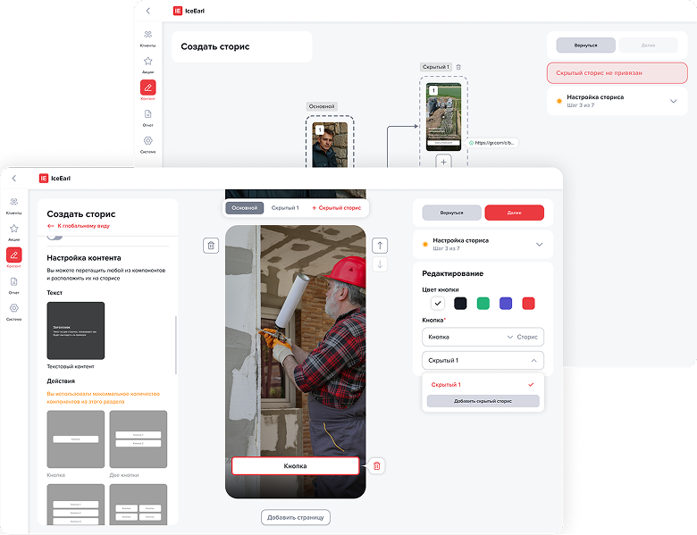
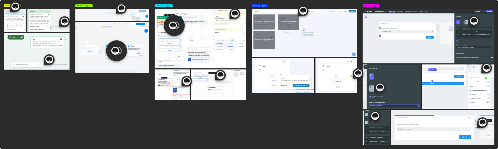
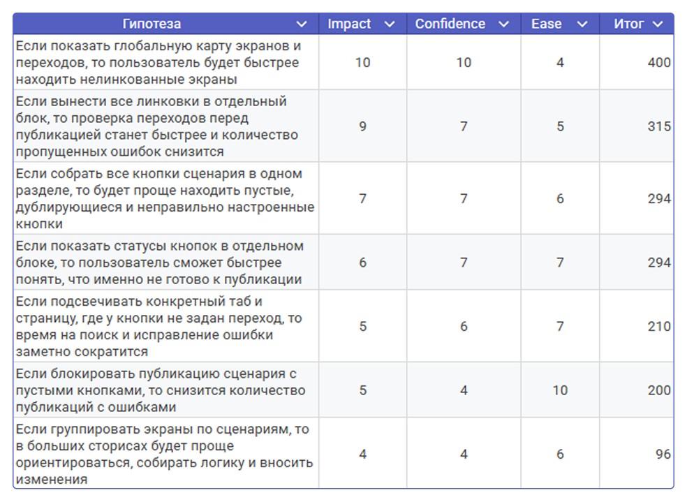
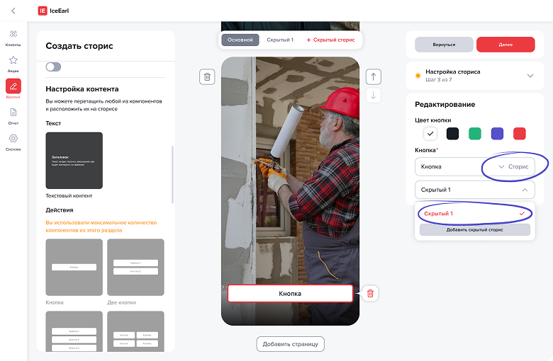
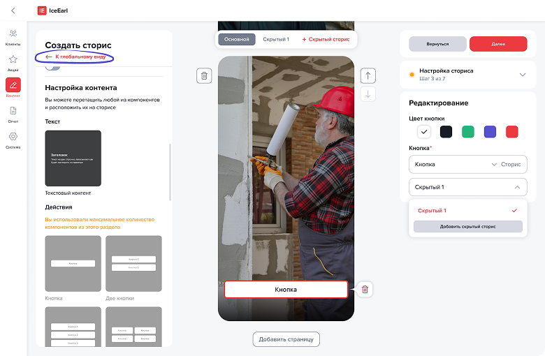
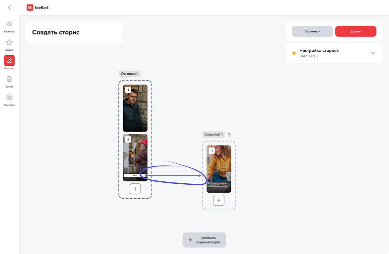
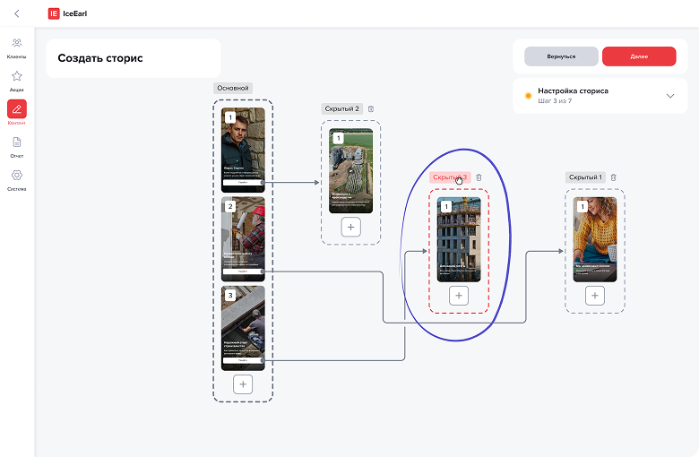
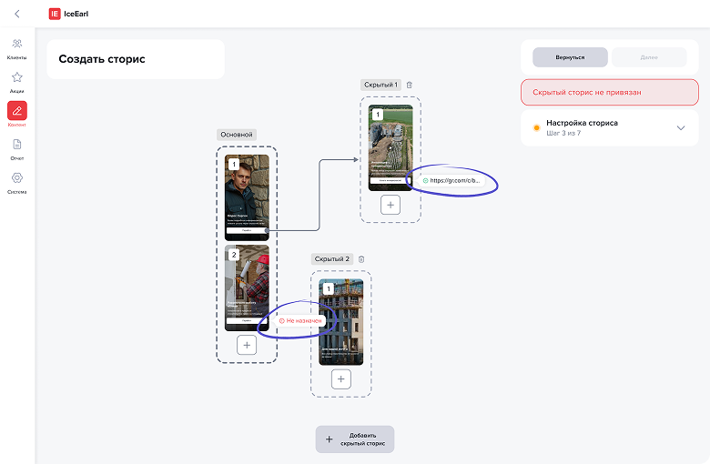
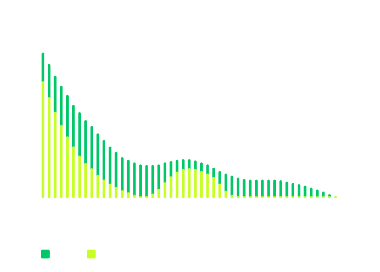

Конструктор сторисов
Или как менеджеры начали создавать сторисы за 20 минут с минимальными ошибками
Или как менеджеры начали создавать сторисы за 20 минут с минимальными ошибками

Раньше сторисы собирали разработчики, что замедляло выпуск контента, поэтому был создан конструктор сторисов, позволяющий менеджерам самостоятельно собирать и публиковать их из готовых пресетов
После тестирования выяснилось, что при создании вложенных сторисов менеджеры вручную проверяют линковку, прокликивая каждую кнопку, что увеличивает время работы и количество ошибок
Проведение юзабилити-тестирования и конкурентного анализа, описание job story и сценариев, приоритизация гипотез по ICE, подготовка screen-flow. Все решения проходили регулярные дизайн-ревью со старшим дизайнером
Ключевыми метриками являются время на выпуск сториса и количество ошибок. Time to publish (TTP) и Error rate (ER)
Выделили два сегмента пользователей: новички и менеджеры. Новички работают с небольшими сторисами и редко сталкиваются со сложными переходами. Менеджеры собирают большие сценарии, поэтому ручная проверка переходов замедляет работу и увеличивает количество ошибок
Провел конкурентный анализ и определил, какие уже реализованные фичи можно внедрить

На основе инсайтов из тестирования, анализа конкурентов были сформулированы job stories
И наконец, на основе всего были сформулированы гипотезы улучшений, которые затем c командой приоритизировали по ICE

В изначальной версии пользователю необходимо было сначала нажать на кнопку, чтобы понять, куда она ведет

В новой версии добавили глобальный вид, который показывает все линковки в одном месте, т.е. без ручного прокликивания


Кроме того, он интерактивный и позволяет удобно перемещать элементы

Также добавили визуальные состояния кнопок, позволяющие сразу определить, ведёт ли кнопка в скрытый сторис, на внешнюю ссылку или переход не назначен

После внедрения провели повторное юзабилити-тестирование, чтобы проверить влияние на TTP и ER
До изменений менеджеры тратили в среднем 25 минут на сложный сторис с вложенными переходами, после внедрения глобального вида время сократилось до 20 минут и 16 секунд
Доля ошибочных линковок и кнопок без перехода снизилась с 15% до 2%
Результаты основаны на 7 итерациях сценариев с 2 менеджерами

В первых итерациях время выросло из-за адаптации к новому интерфейсу. После адаптации они начали чаще использовать его для проверки сценария, что снизило когнитивную нагрузку
Лучший результат получился в 17 минут и 24 секунды
На 4-ой итерации остались ошибки связанные с внешними ссылками
Упростил проверку переходов между сторисами и устранил главное узкое горлышко конструктора, что положительно сказалось на TTP и ER
Следующим логичным шагом я вижу добавление превью ссылок. Это могло бы ещё сильнее сократить остаточные ошибки и приблизить ER к 0-1%